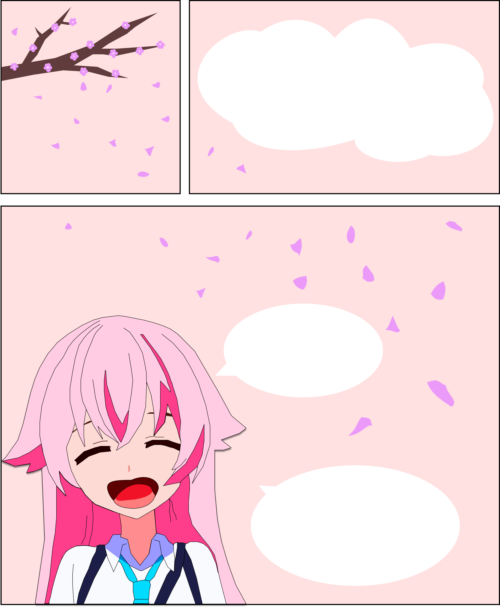
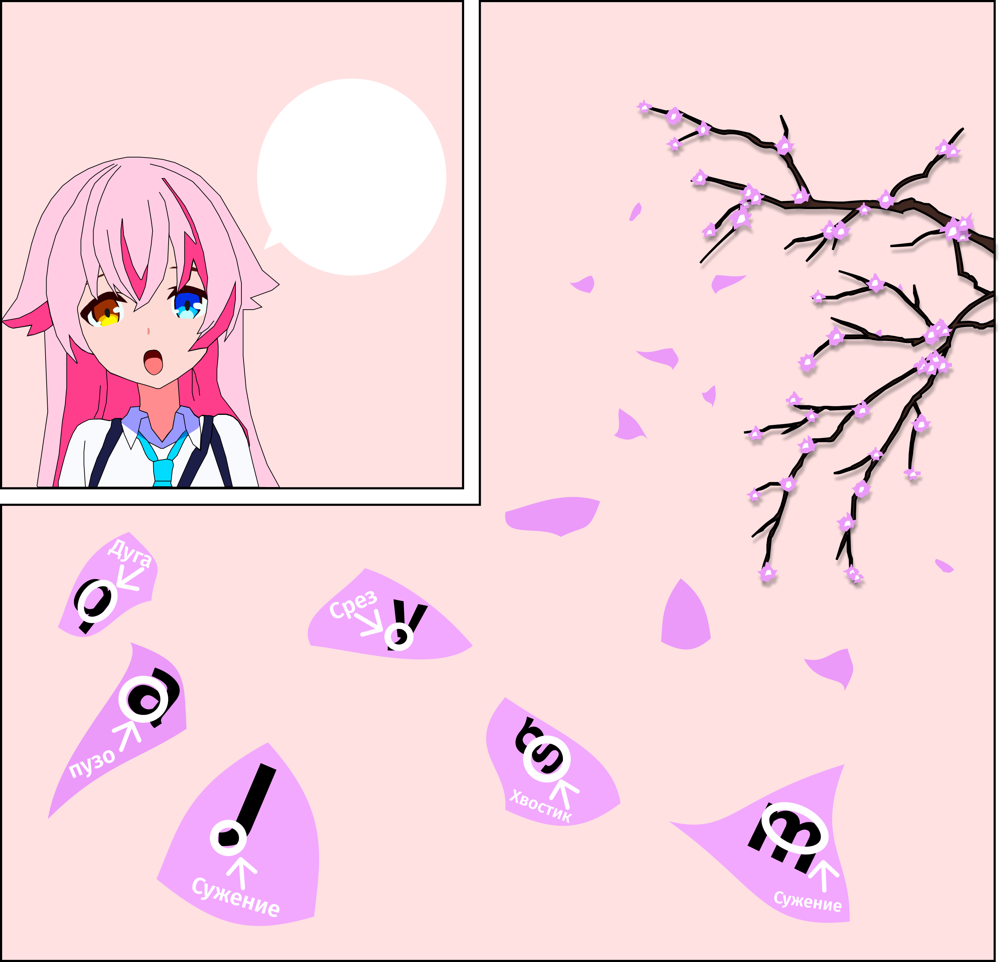
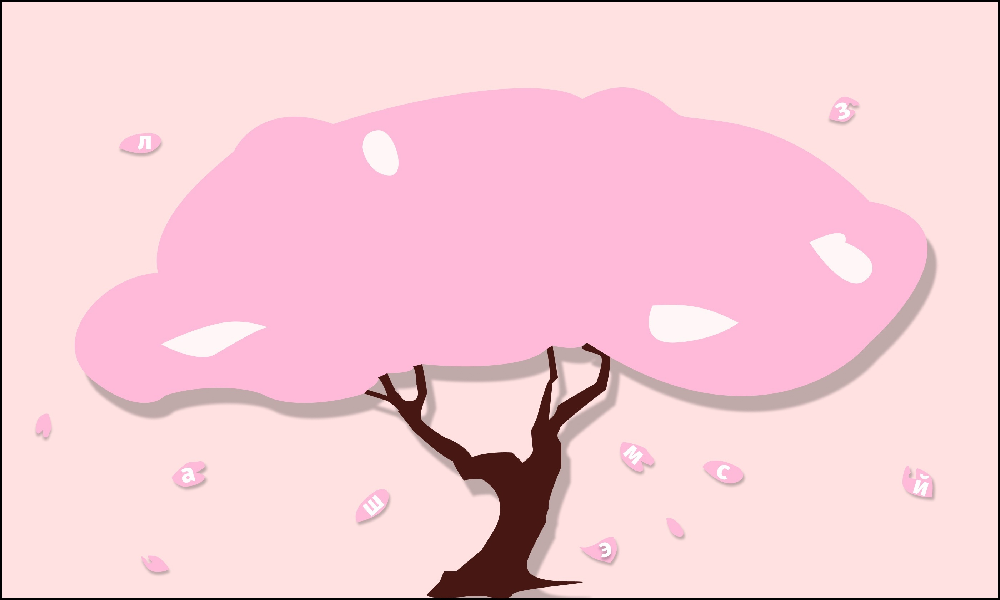
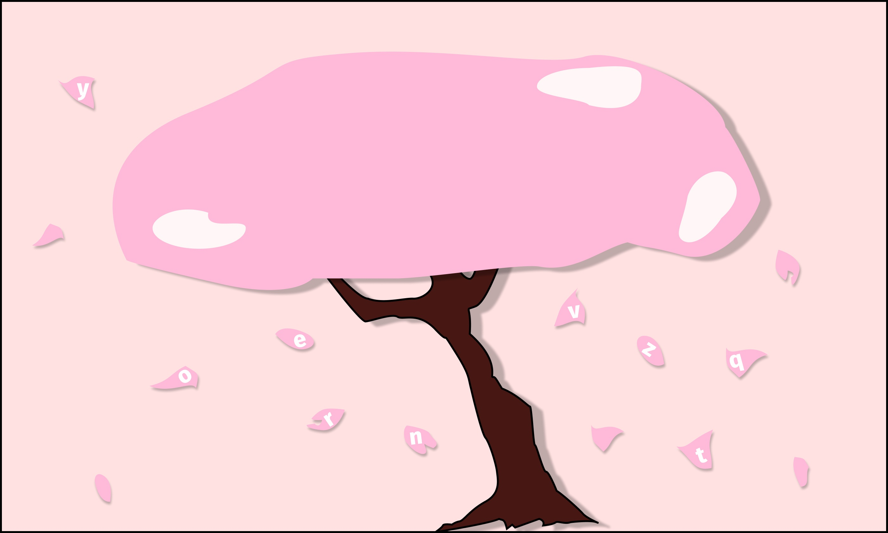
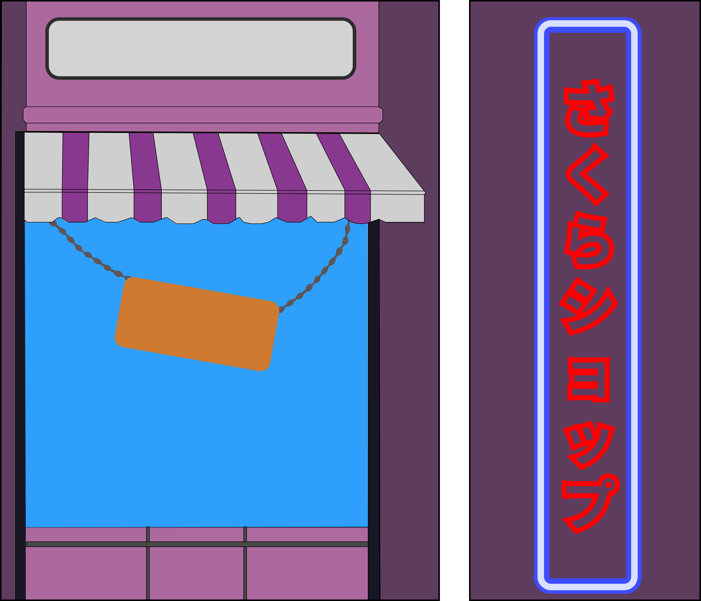
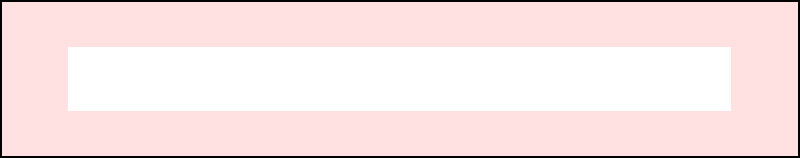

Я - Таканаши Хошино, я расскажу вам про шрифт!
Fira Sans был создан
в 2013 году в студии Carrois Type Design под руководством Эрика Шпикерманна специально для операционной системы Firefox OS

Fira sans - очень универсальный шрифт. Он сочетает в себе спокойствие и утончённость. Каждая буква сделана просто, но с идеей.

Кириллица
А Б В Г Д Е Ё Ж З И Й К Л М Н О П Р С Т У Ф Х Ц Ч Ш Щ Ъ Ы Ь Э Ю Я

Латиница
A B C D E F G H I K L M N O P Q R S T V X Y Z

Примеры использования
Семена всех видов сакуры!

